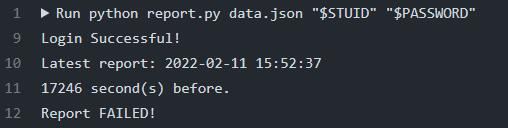
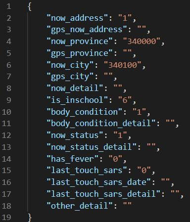
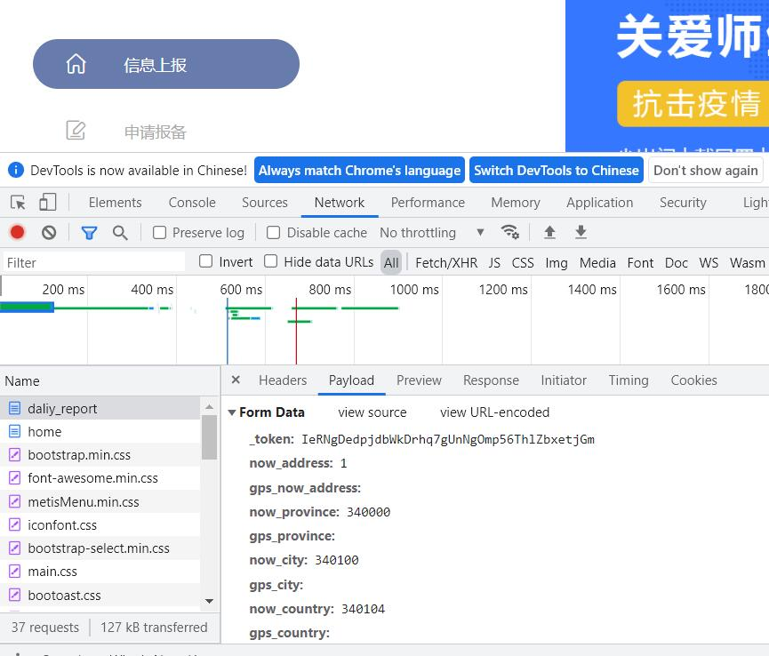
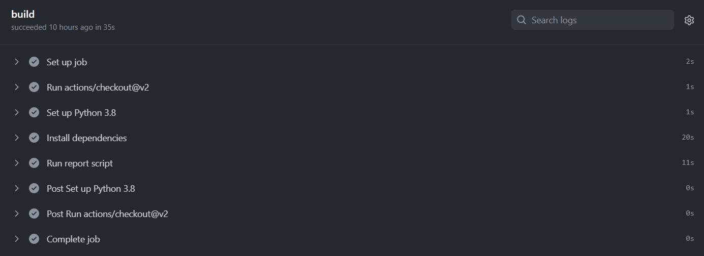
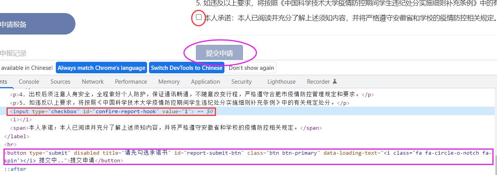
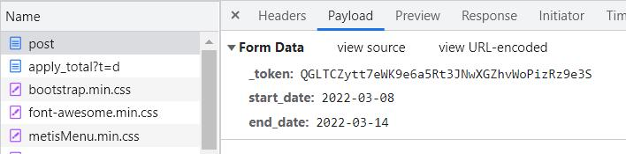
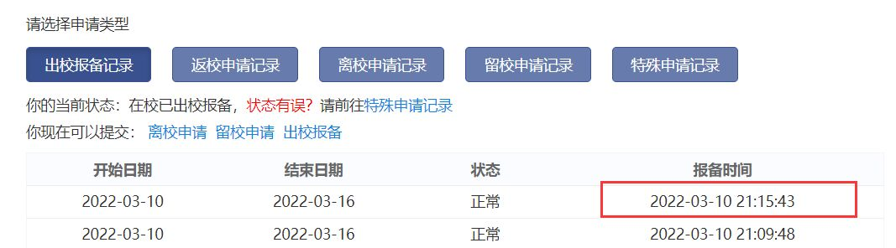

自动健康打卡
先跑起来
基于Github仓库：https://github.com/xbb1973/USTC-ncov-AutoReport
fork别人的仓库然后改改配置文件，然后通过Github的actions功能实现定时打卡
十分钟完事
结果workflows在登录那一步就失败了：
原来这个版本不能识别验证码，而它的workflows是在github提供的ubuntu虚拟机上跑的，在校外网络环境登录时必须填写验证码
可以使用自己的运行器跑，正好学校vlab提供了ubuntu虚拟机，并且是校内网络环境，不需要填验证码…………
但是为什么不自己在虚拟机上写一个python自动打卡程序呢？或者找个办法识别验证码
找到了另一个人在原先版本上做出的改进：https://github.com/Kobe972/USTC-ncov-AutoReport 因为网站的验证码比较简单，所以直接调用pytesseract库，就能识别验证码了
虽然能登录进去了，但是不能成功打卡。如图：检验上次打卡时间可知
最后发现是data格式问题，每次健康上报时提交的信息参数就是data.json，但是原版本和现在版本的内容并不一样
原版本data.json

按照这个版本上报并不能成功
在浏览器里点击确认上报，通过F12开发者工具抓包，点击抓到的 daliy_report 请求，在 Headers 下面找到 Form Data

按照这个格式修改data.json就可以了

原理分析
作为刚学python的人，通过这个案例来学习再好不过了吧
（注：以下内容与源文件并不一定一致）
python的强大之处在于有很多厉害的库，可以让我们轻松地实现复杂的功能，下面将介绍一些用到的库：
requests库
https://docs.python-requests.org/zh_CN/latest/index.html
它是很易用的HTTP库，可以简便地完成HTTP请求
实现HTTP请求：
get： 主要用于向指定的URL请求资源（资源文件或是数据均可）， 可以带参数也可以不带参数， 带参数时，参数是明文传递，你可以在浏览器的地址栏中看到参数名及参数值，get安全性不高，所以常用于安全性要求低的场合， 比如登录后请求数据。
r = requests.get('https://api.github.com/events')这样就获得了github的公共时间线，从这个名为 r 的 Response 对象中可以获取所有我们想要的信息
比如：
r.text会以文本的形式读取服务器响应的内容
Requests 会自动解码来自服务器的内容。请求发出后，Requests 会基于 HTTP 头部对响应的编码作出有根据的推测。当你访问 r.text 之时，Requests 会使用其推测的文本编码
可以使用 r.encoding来查看或修改当前编码模式
又如：
from PIL import Image
from io import BytesIO
text=requests.get('https://passport.ustc.edu.cn/validatecode.jsp?type=login',stream=True).content
image=Image.open(BytesIO(text)).content 会以二进制形式读取服务器响应的内容
然后可以调用PIL库的Image和io库的BytesIO，以图片形式打开这个二进制串，获取登录的验证码图片
post：主要是向指定的URL提交数据, 通常用于表单发送，psot所传递的数据或参数不是已明文形式存在的，而是封装后的，因此相对安全系数高，像注册、登录、提交表单都是用该方法实现的。
payload = {
'model': 'uplogin.jsp',
'service': self.service,
'warn': '',
'showCode': '1',
'username': self.stuid,
'password': str(self.password),
'button': '',
'CAS_LT':CAS_LT,
'LT':LT
}
r=requests.post('https://passport.ustc.edu.cn/login', data=payload)如上就将表单payload的内容发送给了ustc登录界面
headers = {
'authority': 'weixine.ustc.edu.cn',
'origin': 'https://weixine.ustc.edu.cn',
'upgrade-insecure-requests': '1',
'content-type': 'application/x-www-form-urlencoded',
'user-agent': 'Mozilla/5.0 (Windows NT 10.0; Win64; x64) AppleWebKit/537.36 (KHTML, like Gecko) Chrome/91.0.4472.164 Safari/537.36',
'accept': 'text/html,application/xhtml+xml,application/xml;q=0.9,image/webp,image/apng,*/*;q=0.8,application/signed-exchange;v=b3;q=0.9',
'referer': 'https://weixine.ustc.edu.cn/2020/',
'accept-language': 'zh-CN,zh;q=0.9',
'Connection': 'close',
'cookie': "PHPSESSID=" + login.cookies.get("PHPSESSID") + ";XSRF-TOKEN=" + login.cookies.get("XSRF-TOKEN") + ";laravel_session="+login.cookies.get("laravel_session"),
}
url = "https://weixine.ustc.edu.cn/2020/daliy_report"
resp=requests.post(url, data=data, headers=headers)还可以显式地设置url和headers
这里通过自己写headers来伪装成浏览器访问，避开反爬虫检测
此外HTTP还要其它请求，在此按住不表
会话对象
服务器通过session来区分不同的用户请求，requests.Session对象就是模拟这种操作的，可以跨请求保持一些参数————比如不需要每次切换页面之后都要重新登录。requests.Session对象也可以用上面的那些方法
BeautifulSoup库
https://www.crummy.com/software/BeautifulSoup/
Beautiful Soup 提供一些简单的、python 式的函数用来处理导航、搜索、修改分析树等功能。在爬虫中主要用来提取出 HTML 标签中的内容
data = login.result.text
data = data.encode('ascii','ignore').decode('utf-8','ignore')
soup = BeautifulSoup(data, 'html.parser')
token = soup.find("input", {"name": "_token"})['value']Beautiful Soup 将复杂 HTML 文档转换成一个复杂的树形结构，每个节点都是 Python 对象，所有对象可以归纳为 4 种:
- Tag
- NavigableString
- BeautifulSoup
- Comment
详细用法可以看这篇：
https://cuiqingcai.com/1319.html
再加一个功能
实际上自动健康打卡在学校并不是刚需（几个月不打卡都不会有事），但是自动出校报备却是刚需：每过一周就要报备出校一次，否则一卡通会无法解锁门禁系统。这个功能和前面的健康打卡很像：
按下按钮？
Requests库通过post模拟点击“提交申请”，但是网站有一个“本人承诺”的 checkbox 如果不点击它，则不能点击“提交申请”。它们之间的逻辑是以脚本的形式写在html文件里面的：
会不会非得按下那个 checkbox 之后，才能成功post呢？
结论是，不用，只要知道往哪个url里面post就行了
基本实现
start_date = date.today()
if start_date.weekday() == 2:
end_date = start_date + datetime.timedelta(days=6)
start_date = start_date.isoformat()
end_date = end_date.isoformat()
data2 = {
"_token": token2,
"start_date": start_date,
"end_date": end_date
}
headers2 = {
...
}
url2 = "https://weixine.ustc.edu.cn/2020/apply/daliy/post"
resp2 = login.session.post(url2, data=data2, headers=headers2)首先调用date库查看当日日期，如果是周三，就在健康打卡之后进行出校报备（因为出校报备一周一次就够了）
依照抓到的包的形式自己写一个 data2 post上去，post的目标 url2 也是在网页html中可以找到
但是这样并不能成功报备，只能合理怀疑 token 有问题了，我之前认为它和健康打卡post的 token 一样，再次用BeautifulSoup找出当前的 token ，结果发现和之前一样
data = login.session.get('https://weixine.ustc.edu.cn/2020/apply/daliy').text
data = data.encode('ascii', 'ignore').decode('utf-8', 'ignore')
soup = BeautifulSoup(data, 'html.parser')
token = soup.find("input", {"name": "_token"})['value']
token2 = token那么就是headers的问题了
headers2 = {
'authority': 'weixine.ustc.edu.cn',
'upgrade-insecure-requests': '1',
'content-type': 'text/html; charset=UTF-8',
'user-agent': 'Mozilla/5.0 (Windows NT 10.0; Win64; x64) AppleWebKit/537.36 (KHTML, like Gecko) Chrome/91.0.4472.164 Safari/537.36',
'accept': 'text/html,application/xhtml+xml,application/xml;q=0.9,image/webp,image/apng,*/*;q=0.8,application/signed-exchange;v=b3;q=0.9',
'referer': 'https://weixine.ustc.edu.cn/2020/home',
'accept-language': 'zh-CN,zh;q=0.9',
'cookie': "PHPSESSID=" + login.cookies.get("PHPSESSID") + ";XSRF-TOKEN=" + login.cookies.get("XSRF-TOKEN") + ";laravel_session=" + login.cookies.get("laravel_session"),
}实际上headers写多少，写什么内容都不是必须的，本着言多必失的原则，将它缩短一点，只保留可能被用来反爬虫检测的部分：
headers2 = {
'user-agent': 'Mozilla/5.0 (Windows NT 10.0; Win64; x64) AppleWebKit/537.36 (KHTML, like Gecko) Chrome/91.0.4472.164 Safari/537.36',
'cookie': "PHPSESSID=" + login.cookies.get("PHPSESSID") + ";XSRF-TOKEN=" + login.cookies.get("XSRF-TOKEN") + ";laravel_session=" + login.cookies.get("laravel_session"),
}结果就成功了！
说明还是headers的某条参数的问题
检测是否成功
打卡之后应该检测是否成功，就是到 https://weixine.ustc.edu.cn/2020/apply_total 页面中查看最后一次报备时间：
具体来说，要用Requests库get网页html文件，再用BeautifulSoup库解析文件，并且用re库进行正则表达式匹配
data = login.session.get("https://weixine.ustc.edu.cn/2020/apply_total").text
soup = BeautifulSoup(data, 'html.parser')
context = soup.find("table")
pattern = re.compile("202[0-9]-[0-9]{2}-[0-9]{2} [0-9]{2}:[0-9]{2}:[0-9]{2}")下面就在BeautifulSoup找到的table表格中寻找满足pattern条件的第一个字符串，那就是最近一次打卡时间，并与现在时间作差值，如果在最近（两分钟内）申报过，那么就视为成功
flag = False
if pattern.search(token.text) is not None:
date1 = pattern.search(token.text).group()
print("Latest apply: " + date1)
date1 = date1 + " +0800"
reporttime = datetime.datetime.strptime(date1, "%Y-%m-%d %H:%M:%S %z")
timenow = datetime.datetime.now(pytz.timezone('Asia/Shanghai'))
delta = timenow - reporttime
print("{} second(s) before.".format(delta.seconds))
if delta.seconds < 120:
flag = True
if flag == False:
print("Report FAILED!")
else:
print("Report SUCCESSFUL!")至此，自动健康打卡和出门申报功能就齐全了
那么，在哪里可以用到呢？
实际上自动健康打卡是一个灰色地带，能不能用还是个问题
源码发布在 https://github.com/Baorunhui/USTC-ncov-AutoReport
再次感谢我借鉴学习的xbb1973和Kobe972的代码
拓展阅读
登录网站的验证往往是个大问题，本次健康打卡平台的验证码实在是容易识别，不过别的平台就不是这样了
参考 https://blog.csdn.net/weizhen11/article/details/102509230/ 使用pyppeteer库可以实现更加强大的功能
一：淘宝验证码 拖动滑块
(1) 淘宝的验证码验证模块会检测浏览器环境，要注入JS ；
(2) 尽可能模拟用户操作，随机数减慢 Pyppeteer 的执行速度
二：12306验证码
- 对接打码平台是比较不错的选择；原理就是把验证码图片以字节的方式发给他们，返回一个字符串，例如：183,68|193,161;
比如超级鹰打码平台API:chaojiying.py
- 对接打码平台是比较不错的选择；原理就是把验证码图片以字节的方式发给他们，返回一个字符串，例如：183,68|193,161;
不过像打码平台这个是不是灰色产业，我就不清楚了